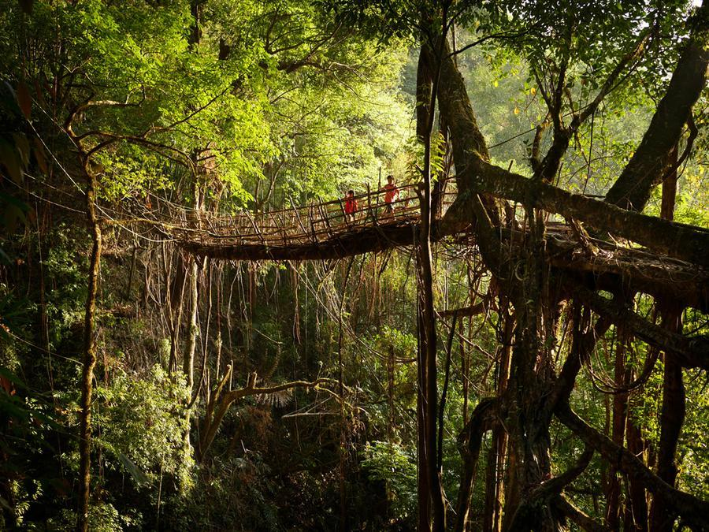

Mawsynram

Itinerary
DAY1- PICKUP GUWAHATI AIRPORT (9:30am) Ghy Local Sightseeing & Nighthalt at Guwahati
Sightseeing -Kamakhya Temple, Balaji Temple,Basistha Ashram, Sankar Dev Kalakhetra, Brahmaputra River Cruise
DAY2- Drive TO SHILLONG & Shillong Local Sightseeing & Nighthalt
Sightseeing- Umiam Lake, Wards Lake, Lady Hydari Park & Zoo, Cathedral Church, Shillong Golf Course, Don Bosco Museum
DAY3- CHERAPUNJEE SIGHSEEING & Back to Shillong & Nighthalt
Sightseeing -Shillong Peak, Elephant falls,Duwan Sing Syiem Bridge,Ram Krishna Mission, Nohkalikai Falls,Eco Park (Water Falls),Mawsmai Cave,Thangkharang Park, Khon Ramhah
DAY4- Drive to MAWLYNNONG Sightseeing & Back to Shillong & Nighthalt
Sightseeing -Mawlynnong – Asia’s cleanest village, Tree House, Living Root Bridge, Sky View Point, Balancing rock
DAY5- Drive to Mawsynram Sightseeing & backto shillong & nighthalt
Sightseeing -Mawjyngbuin Cave (Mawsynram cave), Naturally formed Shiva Linga ,Mawphlang Dam, Mawphlang Sacred Forest,Jakrem (Hotwater Spring)
DAY6- Drive to Guwahati & Drop at Guwahati Airport (12:30pm)